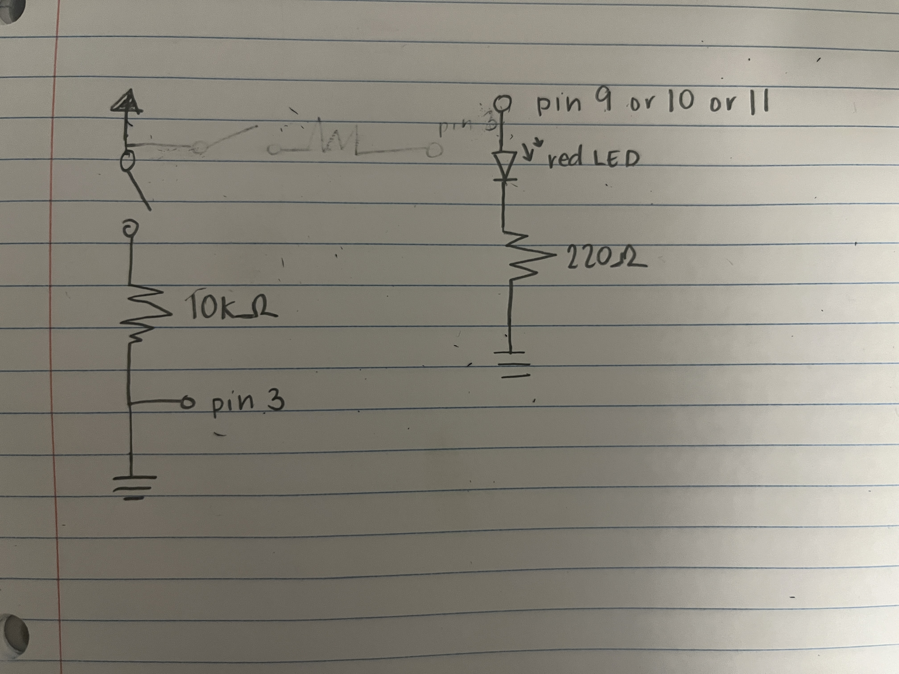

Jency's Assignment 2!

I calculated the the resistor necessary for the red LEDs using the V=IR equation. R = V/I = (5V-1.8V)/0.02A = 160 ohms. Thus, I used the next closest resistor which is 220 ohms.

Here is a video link for assignment 2! Video Link
Here is all the Aruduino Code for assignment 2!
Arduino Code